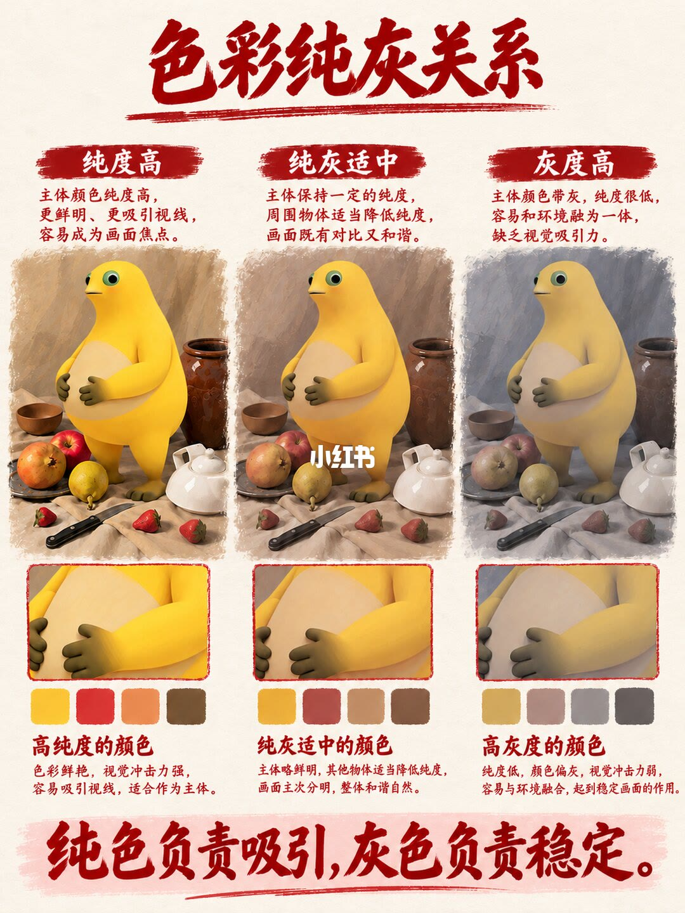
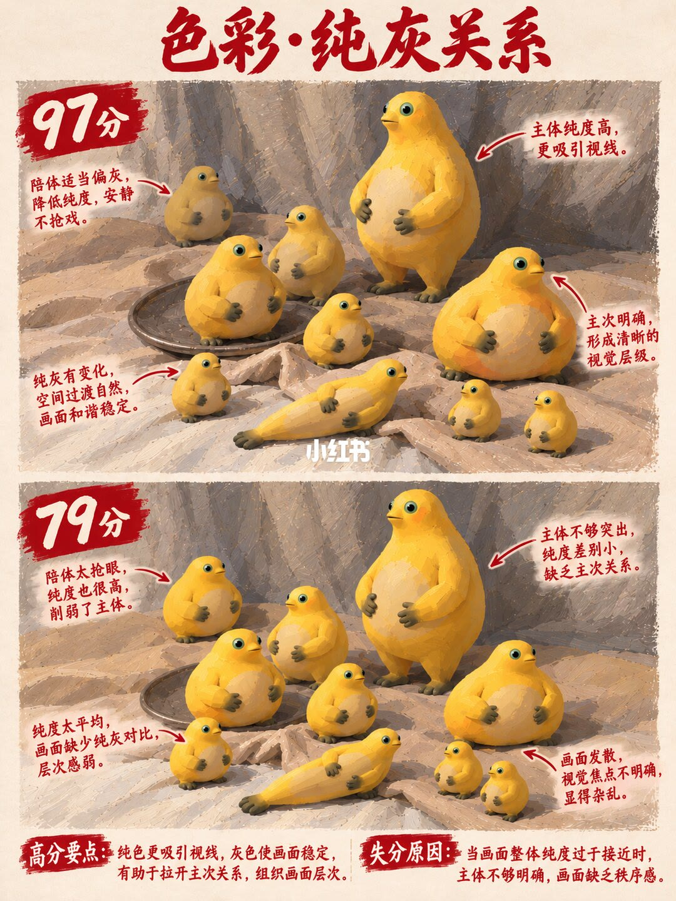
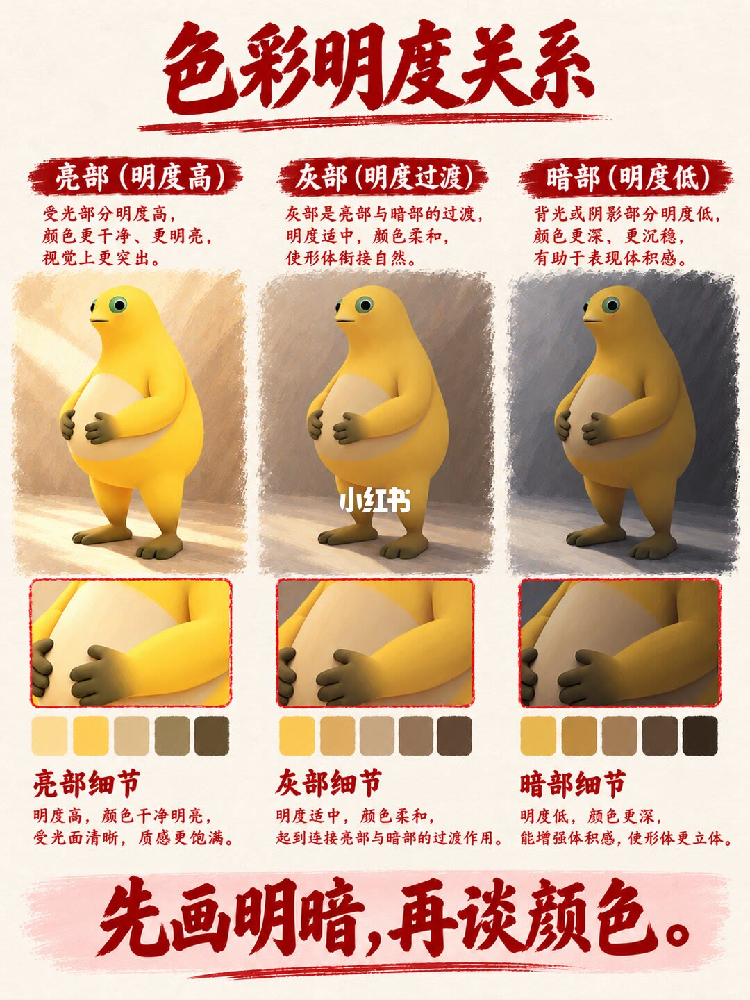
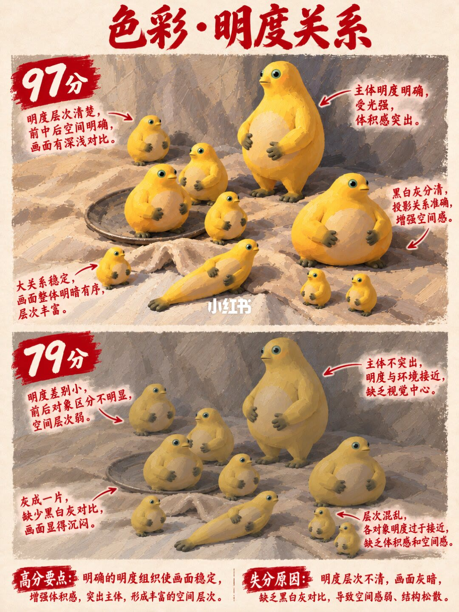
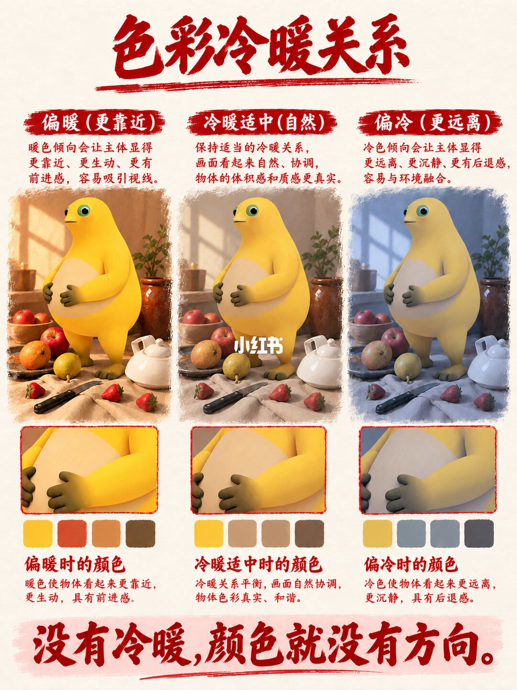
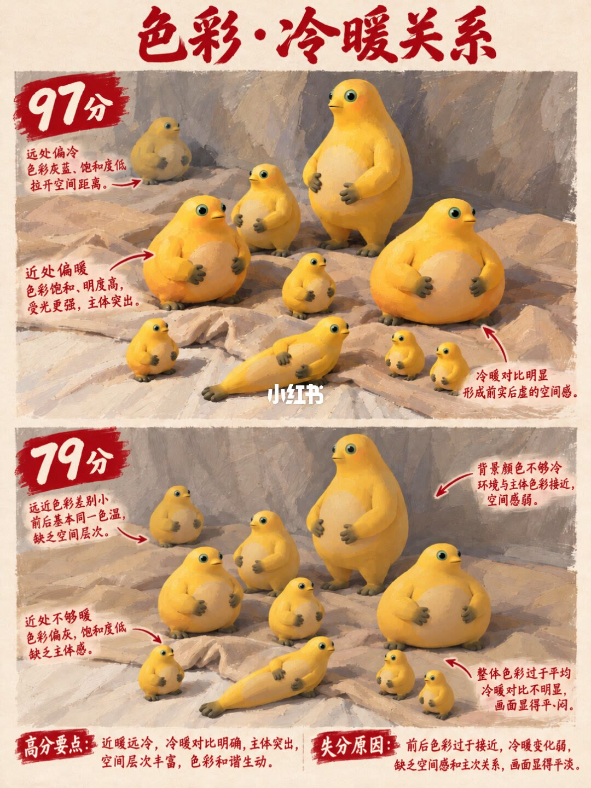
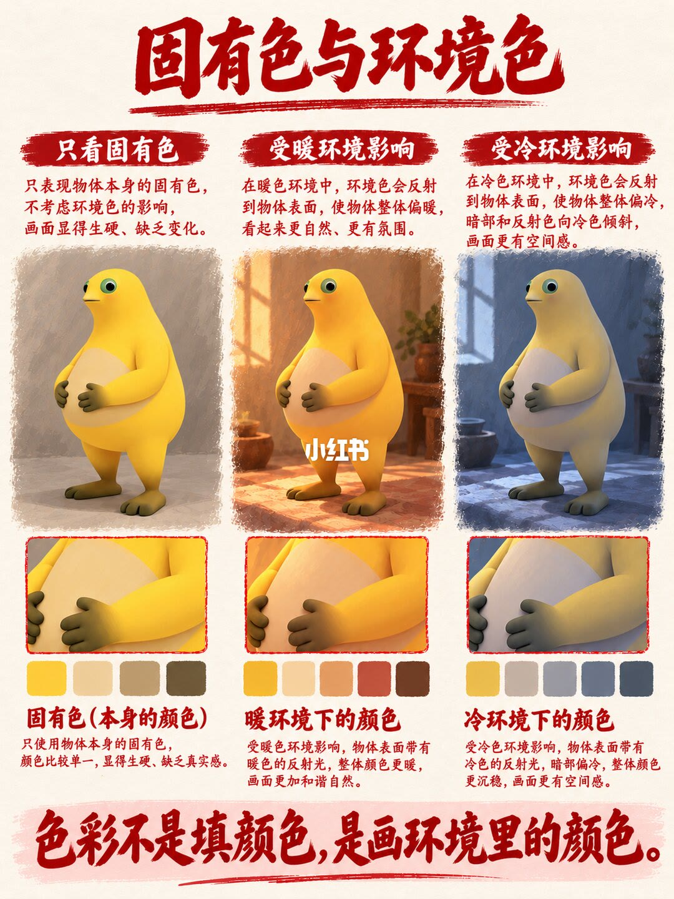
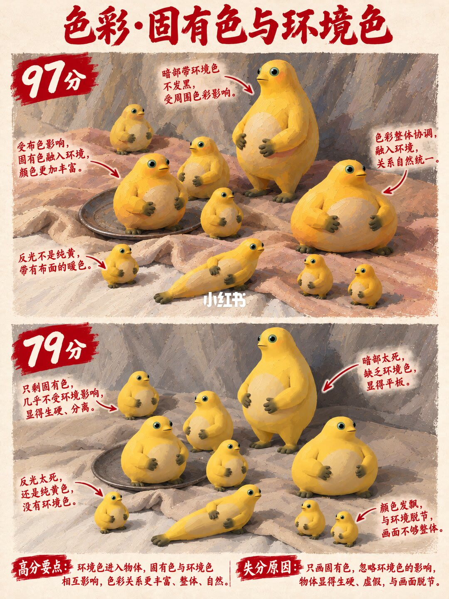

图文实录 · 小红书 · 杭州大云画室（翼帛）
色彩的基础知识
这八页把色彩基础收成四对，而不是一张色环。纯灰管谁抢眼，明度管体积和前后，冷暖管远近方向，固有色和环境色管物体有没有画进它所在的光里。奇数页用同一只黄色圆角色分三档，偶数页用同一群角色对照 97 分和 79 分。
1/8
纯色负责吸引，灰色负责稳定
页题「色彩纯灰关系」。三列是纯度高、纯灰适中、灰度高。同一只黄色圆角色放在静物里：布、水果、木碗、刀、陶罐和茶壶都在。每列有一块局部放大，下面四块色样。页面没有色号。
左列写：主体颜色纯度高，更鲜明、更吸引视线，容易成为画面焦点。色样旁写高纯度的颜色，色彩鲜艳，视觉冲击力强，容易吸引视线，适合作为主体。中列写：主体保持一定的纯度，周围物体适当降低纯度，画面既有对比又和谐。色样旁写主体略鲜明，其他物体适当降低纯度，画面主次分明，整体和谐自然。右列写：主体颜色带灰，纯度很低，容易和环境融为一体，缺乏视觉吸引力。色样旁写纯度低，颜色偏灰，视觉冲击力弱，容易与环境融合，起到稳定画面的作用。页底大字：纯色负责吸引，灰色负责稳定。

2/8
纯度太平均，就没有主次
页题「色彩·纯灰关系」。上图标 97 分，下图标 79 分。两幅都是一群黄色圆角色站在有笔触的地上。97 分里，中间那只更鲜，周围几只更灰。79 分里，大小角色的黄几乎一样鲜。中间有小红书水印。
97 分的批注：主体纯度高，更吸引视线。陪体适当偏灰，降低纯度，安静不抢戏。主次明确，形成清晰的视觉层级。纯灰有变化，空间过渡自然，画面和谐稳定。79 分的批注：主体不够突出，纯度差别小，缺乏主次关系。陪体太抢眼，纯度也很高，削弱了主体。纯度太平均，画面缺少纯灰对比，层次感弱。画面发散，视觉焦点不明确，显得杂乱。
高分要点：纯色更吸引视线，灰色使画面稳定，有助于拉开主次关系，组织画面层次。失分原因：当画面整体纯度过于接近时，主体不够明确，画面缺乏秩序感。97 和 79 怎么算出来，图上没有细则。

3/8
先画明暗，再谈颜色
页题「色彩明度关系」。三列是亮部（明度高）、灰部（明度过渡）、暗部（明度低）。还是那只黄色圆角色，每列换的是受光程度，下面各有局部和一排色样。色样没有标数值。
亮部写：受光部分明度高，颜色更干净、更明亮，视觉上更突出。细节写：明度高，颜色干净明亮，受光面清晰，质感更饱满。灰部写：灰部是亮部与暗部的过渡，明度适中，颜色柔和，使形体衔接自然。细节写：明度适中，颜色柔和，起到连接亮部与暗部的过渡作用。暗部写：背光或阴影部分明度低，颜色更深，更沉稳，有助于表现体积感。细节写：明度低，颜色更深，能增强体积感，使形体更立体。页底大字：先画明暗，再谈颜色。

4/8
灰成一片，就没有空间
页题「色彩·明度关系」。仍是那群黄色圆角色，上图 97 分，下图 79 分。97 分里受光和投影分得开。79 分里角色和地面的深浅靠得很近。
97 分的批注：明度层次清楚，前中后空间明确，画面有深浅对比。主体明度明确，受光强，体积感突出。黑白灰分清，投影关系准确，增强空间感。大关系稳定，画面整体明暗有序，层次丰富。79 分的批注：明度差别小，前后对象区分不明显，空间层次弱。主体不突出，明度与环境接近，缺乏视觉中心。灰成一片，缺少黑白灰对比，画面显得沉闷。层次混乱，各对象明度过于接近，缺乏体积感和空间感。
高分要点：明确的明度组织使画面稳定，增强体积感，突出主体，形成丰富的空间层次。失分原因：明度层次不清，画面灰暗，缺乏黑白灰对比，导致空间感弱、结构松散。

5/8
没有冷暖，颜色就没有方向
页题「色彩冷暖关系」。三列是偏暖（更靠近）、冷暖适中（自然）、偏冷（更远离）。同一只黄色圆角色和同一套静物，三列的色调不同。每列有局部和四块色样，没有色号。
偏暖写：暖色倾向会让主体显得更靠近、更生动、更有前进感，容易吸引视线。色样旁写暖色使物体看起来更靠近，更生动，具有前进感。冷暖适中写：保持适当的冷暖关系，画面看起来自然、协调，物体的体积感和质感更真实。色样旁写冷暖关系平衡，画面自然协调，物体色彩真实、和谐。偏冷写：冷色倾向会让主体显得更远离、更沉静、更有后退感，容易与环境融合。色样旁写冷色使物体看起来更远离，更沉静，具有后退感。页底大字：没有冷暖，颜色就没有方向。

6/8
近暖远冷，才有前后
页题「色彩·冷暖关系」。上图 97 分，下图 79 分，还是那群黄色圆角色。97 分里近处更暖、更饱和，远处更灰蓝。79 分里前后差不多同一个黄。
97 分的批注：远处偏冷，色彩灰蓝、饱和度低，拉开空间距离。近处偏暖，色彩饱和、明度高，受光更强，主体突出。冷暖对比明显，形成前实后虚的空间感。79 分的批注：远近色彩差别小，前后基本同一色温，缺乏空间层次。近处不够暖，色彩偏灰，饱和度低，缺乏主体感。背景颜色不够冷，环境与主体色彩接近，空间感弱。整体色彩过于平均，冷暖对比不明显，画面显得平、闷。
高分要点：近暖远冷，冷暖对比明确，主体突出，空间层次丰富，色彩和谐生动。失分原因：前后色彩过于接近，冷暖变化弱，缺乏空间感和主次关系，画面显得平淡。

7/8
颜色要画在环境里
页题「固有色与环境色」。三列是只看固有色、受暖环境影响、受冷环境影响。左列的黄色圆角色站在偏灰的房间里，颜色主要是它自己的黄。中列房间偏暖，身上带暖的反射。右列房间偏冷，暗部往冷走。每列有局部和四块色样，没有色号。
只看固有色写：只表现物体本身的固有色，不考虑环境色的影响，画面显得生硬、缺乏变化。色样标题是固有色（物体本身的颜色），旁边写只使用物体本身的固有色，颜色比较单一，显得生硬、缺乏真实感。暖环境写：在暖色环境中，环境色会反射到物体表面，使物体整体偏暖，看起来更自然、更有氛围。色样旁写受暖色环境影响，物体表面带有暖色的反射光，整体颜色更暖，画面更加和谐自然。冷环境写：在冷色环境中，环境色会反射到物体表面，使物体整体偏冷，暗部和反射色向冷色倾斜，画面更有空间感。色样旁写受冷色环境影响，物体表面带有冷色的反射光，暗部偏冷，整体颜色更沉稳，画面更有空间感。页底大字：色彩不是填颜色，是画环境里的颜色。

8/8
暗部和反光都要带上布的颜色
页题「色彩·固有色与环境色」。上图 97 分，下图 79 分。还是那群黄色圆角色，坐在一块有颜色的布上。97 分的暗部和反光能看出布的暖色。79 分的黄更死，暗部发黑，反光仍是纯黄。
97 分的批注：暗部带环境色，不发黑，受周围色彩影响。受布色影响，固有色融入环境，颜色更加丰富。反光不是纯黄，带有布面的暖色。色彩整体协调，融入环境，关系自然统一。79 分的批注：只剩固有色，几乎不受环境影响，显得生硬、分离。暗部太死，缺乏环境色，显得平板。反光太死，还是纯黄色，没有环境色。颜色发飘，与环境脱节，画面不够整体。
高分要点：环境色进入物体，固有色与环境色相互影响，色彩关系更丰富、整体、自然。失分原因：只画固有色，忽略环境色的影响，物体显得生硬、虚假，与画面脱节。

收尾
四对关系，先分清再动手
结论：色彩基础在这套图里是四件事的次序。先按 3/8、4/8 把明暗和黑白灰分开，再按 1/8、2/8 让主体更纯、陪体更灰，按 5/8、6/8 让近处偏暖、远处偏冷，最后按 7/8、8/8 让暗部和反光带上环境色。纯色吸引视线，灰色稳住画面；没有冷暖，颜色没有方向；颜色要画在环境里，而不是只填固有色。
支撑页：纯灰的定义在 1/8，纯度平均的失分在 2/8。明度三档在 3/8，灰成一片的失分在 4/8。冷暖的靠近和远离在 5/8，近暖远冷在 6/8。固有色单独使用的问题在 7/8，暗部不发黑、反光不是纯黄在 8/8。
边界：页面没有色号、颜料名和光比，色样不能当成可抄的配方。97 分和 79 分没有评分细则。示范物是黄色圆角色、静物和布，换题材以后这四个分数不会自动成立。笔记正文的顺序是固有色、冷暖、纯灰、明度，图页顺序是纯灰、明度、冷暖、固有色，四对内容对得上，引用时以页码为准。第 4 页的「灰成一片」说的是明度，第 1、2 页的灰说的是纯度，两处不要混用。